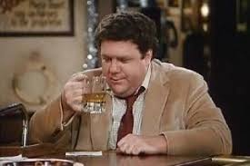
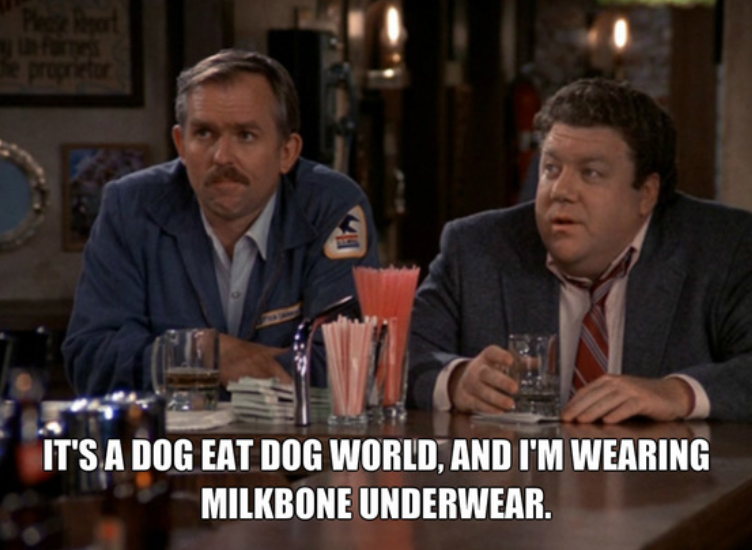
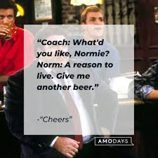
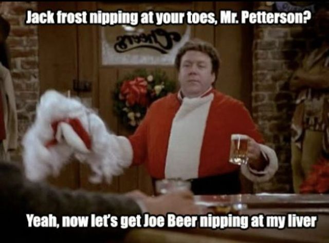
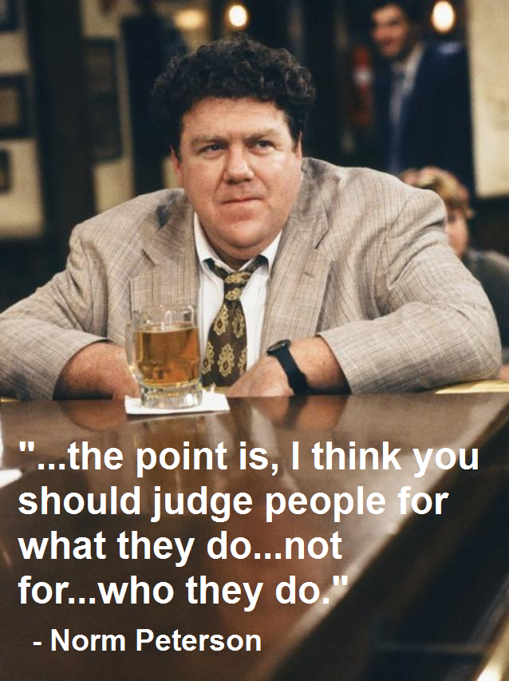
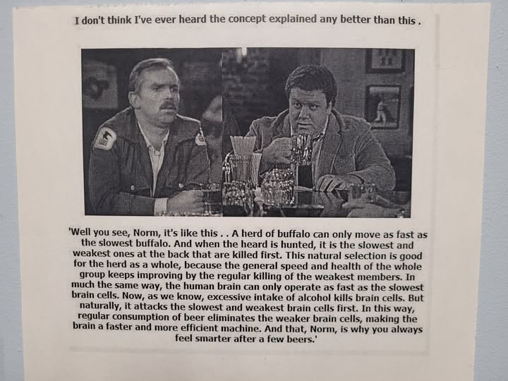
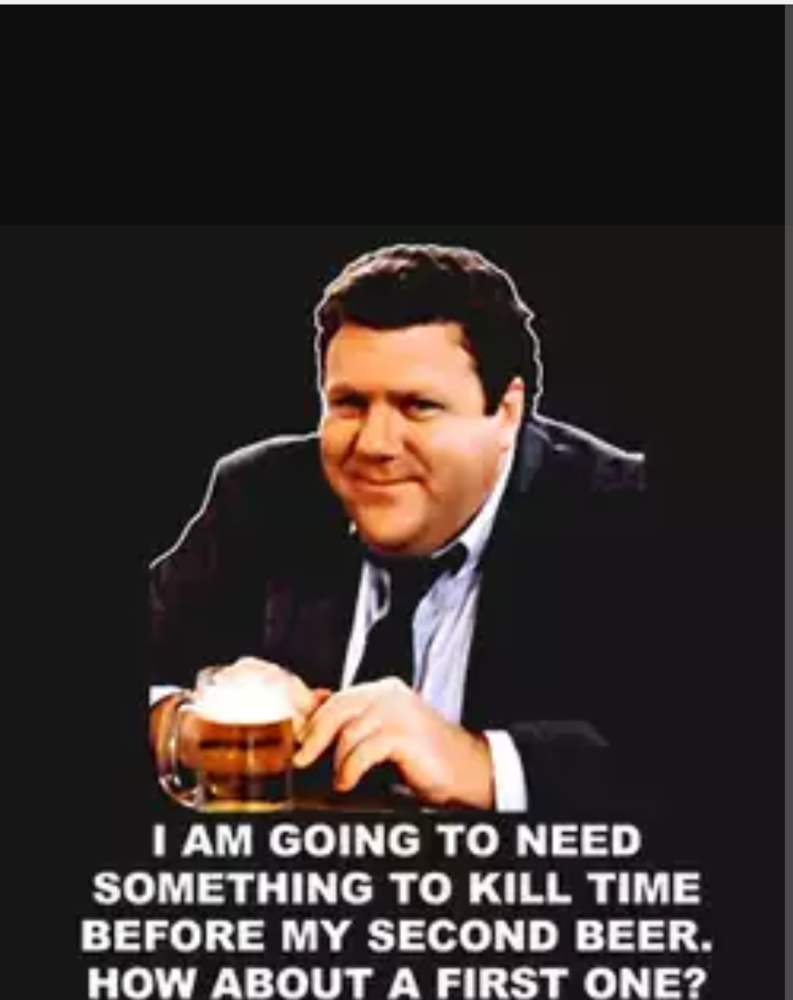

Hilary Norman Peterson
Norm's entrance into the bar is a running gag on Cheers, typically beginning with a greeting by Norm, usually "Afternoon (or Evening), everybody!". This is followed by the bar crowd yelling his name (except Diane Chambers, who would follow them with a more refined "Norman"). Afterwards, someone, usually either Sam, Coach, or Woody (who addresses Norm as "Mr. Peterson") will ask how Norm is doing, and what he'd like to order, and Norm usually responds with a witty remark, frequently about his life, and orders a beer. Norm is also greeted with the customary "Norm!" shout at other locations, including a bowling alley ("From Beer to Eternity", season 4, episode 9), The Hungry Heifer ("Cheers: The Motion Picture", season 5, episode 24), and Gary's Olde Towne Tavern, Cheers' rival bar ("Bar Wars VI", season 10, episode 23). When Sam asks why the people at Gary's know him by name, Norm replies that he goes there on Christmas when Cheers is closed. A recurring gag in the series is, following a commercial, for the bartender to ask Norm if he wants another beer; Norm replies "one quick one," after which he inevitably stays a lot longer. "Norm" is actually the first word of Frederick Crane, son of Frasier Crane and Lilith Sternin. (However, Lilith joyously believes that he said "Mommy!")
Prior to the show, Norm was born in Chicago, and moved to Boston to become an accountant,[11] and is a lifelong Boston Celtics fan who went to Boston Garden as a child.[12] Norm previously served in the United States Coast Guard, though in an earlier episode he stated he had been in the Army. He loses his job in an accounting firm by defending Diane from his boss,[13] and after struggling for few years as an independent accountant, eventually becomes a housepainter. Norm was also revealed to be an accomplished interior decorator and beer taster, capable of spotting a bad vat in a factory by drinking a single bottle.
Even when unemployed, Norm is the bar's best customer. A running gag throughout the series are the numerous jokes made about the enormous size of Norm's tab at Cheers: several large binders are shown as being just a portion of it. In the episode "Home Malone" (season 9, episode 24), when Woody's rich, naïve girlfriend Kelly waitresses at Cheers to gain "real-life experience," Norm convinces her that the tab is a record of the beers for which he has already paid, and for each new beer a mark should be erased. In the finale, Sam jokes that he has to have Norm's total tab calculated by NASA. The only time he was seen to pay off any of his tab was when new manager Rebecca Howe temporarily cut him off after discovering he owed almost $850, but she agreed to payment in kind by him painting her office and apartment. This led to him setting up as a housepainter. Additionally, when Sam regains ownership of the bar in the ninth season, one of his first acts as owner is to eradicate all amounts outstanding on existing bar tabs (for which Norm is profoundly grateful). Norm also annually receives a complimentary beer on his birthday.
Norm's best friend is postman and fellow barfly Cliff Clavin.
Norm's wife Vera is often mentioned but her face is never seen. When she is finally shown, her face is covered in pie thrown by Diane (season 5, episode 9 "Thanksgiving Orphans,") and the actress is uncredited. The only other times she is seen, viewers can see only her legs and at one time her waving from a car which drives past Cheers on her 15th wedding anniversary. Vera is the butt of many of Norm's jokes, but on many occasions, Norm has professed secretly an undying love for his wife or defended her honor. He also refused to cheat on her in the episode "Norm's Big Audit" where a female IRS agent was prepared to overlook his tax evasion if he did. He explained in this instance that he felt he was a bad husband but would not cheat on his wife as it would make him a bad person. Norm and Vera separated during the second season of Cheers but reconciled in the last episode of the season, contrasting the romance between Sam and Diane, who enjoyed a romance then bitterly broke up in that last episode. When Vera got a job at Melville's, however, he was deeply disturbed by her proximity to him during his bar time. Vera was played by George Wendt's real-life wife, Bernadette Birkett.
In the Cheers episode "It's a Wonderful Wife" (season 9, episode 21), Vera tells Rebecca off-camera that Norm's real first name is Hilary, a fact relayed to the rest of the bar by Carla. He explains that he was named after his grandfather who "once killed a man for laughing at him." Cliff asks if his grandfather really killed a man for laughing at his first name and Norm replies, "Not exactly. He was a surgeon and he sort of botched an operation."
When not sipping beer at Cheers, Norm satisfies his hunger at an eatery called The Hungry Heifer, whose emblem is a young cow smacking her chops. The customers there greet him just the same as the Cheers patrons do. He knows the waitresses by name, and usually orders a meal called a Feeding Frenzy, a monstrous supply of corn and beef. He denigrated the eatery when he first visited it in season 2, but when the place was being shut down in season 9, he insinuated it was an important place to him throughout his life and said he knew the owner since at latest his college years. Corrine (played by Doris Grau), who worked at Cheers occasionally as a temp waitress, was a server at The Hungry Heifer and said the waitstaff knew Norm as "the guy who comes back." On a lark in college, he became an ordained minister of the Church of the Living Desert after seeing an advertisement in the back of a magazine. In the season 1 episode The Boys in the Bar, Norm is depicted as being homophobic. In season 7, Sam takes a temporary bartending job in Cancún, Mexico. One of his patrons, Pepe, greatly resembles Norm in appearance and mannerisms.
Advice and quotes
      George Wendt
George Robert Wendt III was born and raised in Chicago to Loretta Mary (Howard) and George Robert Wendt II, who was a realtor and navy officer. He attended a strict Jesuit prep school, Rockhurst College (Kansas City, Missouri). He later dropped out of Notre Dame University after a few uneventful years. He worked with Chicago's famed Second City comedy troupe from 1974-1980. He is best known for playing Norm Peterson on the hit television series, Cheers (1982). He is married to actress Bernadette Birkett, who provided the rare offscreen voice of Norm's unseen wife, Vera. The couple have two sons and a daughter. They met while working at the Second City.
Wendt died in his sleep at his home in Los Angeles, on May 20, 2025, at the age of 76, from cardiac arrest. Contributing conditions including congestive heart failure, coronary artery disease, and hypertension (high blood pressure). He also had end-stage renal disease and hyperlipidemia (high blood cholesterol)
George Wendt was a national treasure. I was building a simple navbar and thinking of giving the example project some personality. I could only think if I had met Norm and told him what I was doing "Creating a mobile-first navbar" he would probably say "Does it have beer first navigation?"
I feel this crass yet well natured type of humor is something we could all use a little more of.
May you be rest in peace, Mr. Wendt. We'll keep a stool open for you.